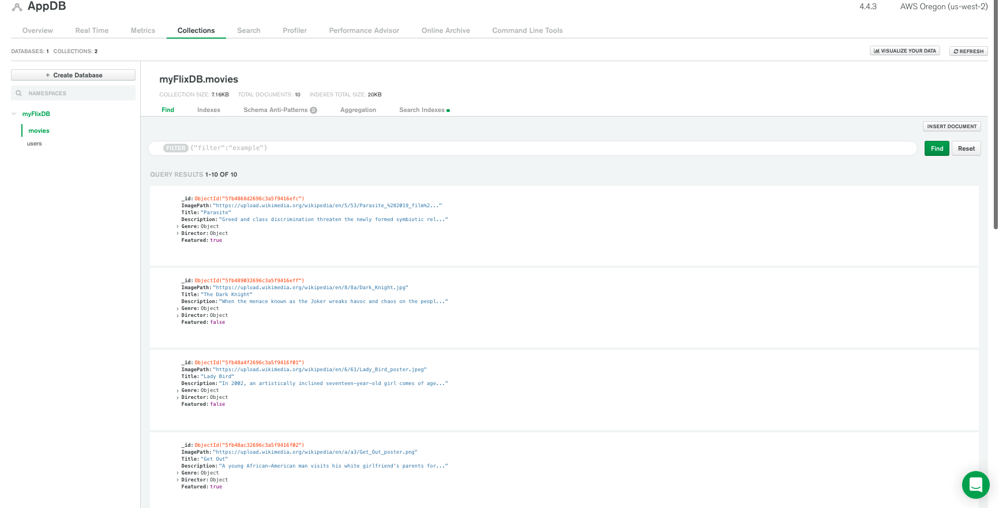
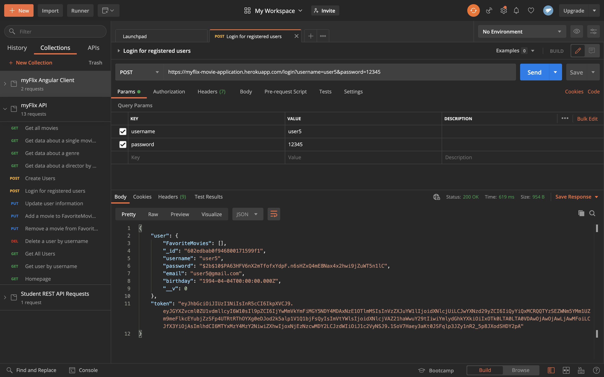
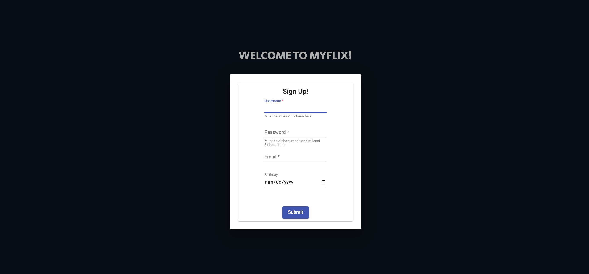
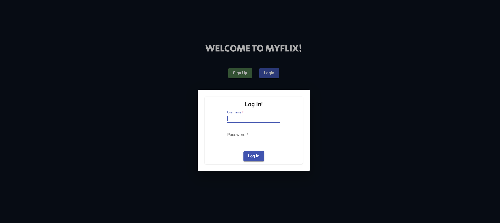
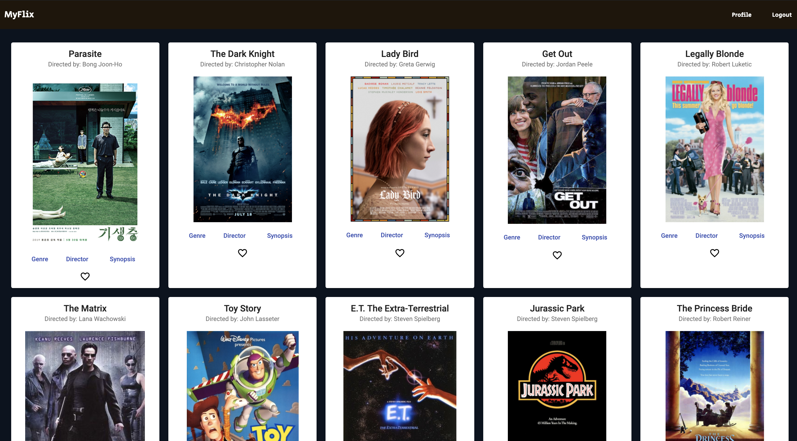
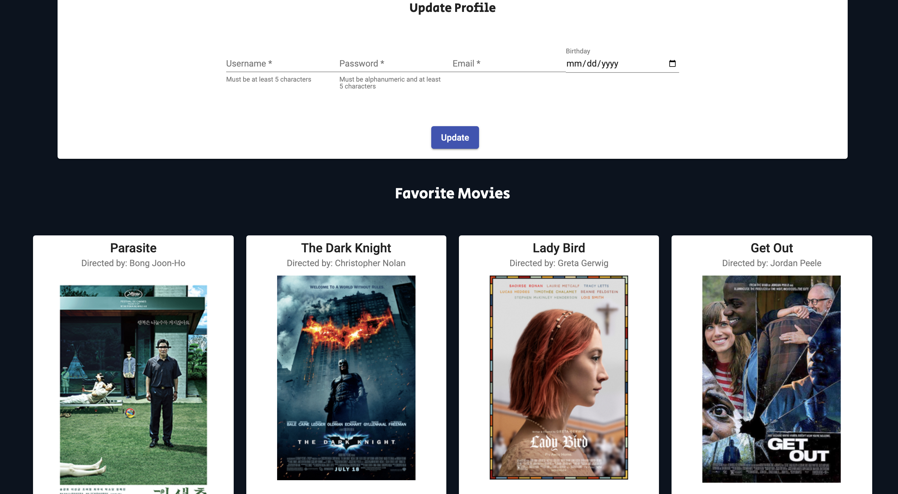

Case Study
~10 minute read
Overview
Project: myFlix Application (Angular Version)
The myFlix app allows users to register an account in order to view a list of movies,
details about a selected movie, add or delete movies to/from user's list of favorites, and
update or delete user's profile account.
Purpose and Context
This project was one of six applications that I built as part of CareerFoundry's Web Development program. In an earlier project, I had already created the myFlix appliction using the MERN stack. In this particular project however, I'll be showcasing the myFlix application using the MEAN stack. Instead of using React for the client-side, this version uses Angular. Apart from the change in client-side development, the rest of the application uses the same server-side (REST API and database) development that the React version uses.
Objective
The goal in creating this application is to add another well-known framework to my full
stack web development skills.
The problem I was trying to solve is how to expand my limited client-side development
knowledge in order to be more marketable as a web developer.
Duration
Overall, the project took one week to complete (mostly because I only needed to change the client-side build, while keeping the server-side API and database the same). Majority of the time was spent learning a new language that was commonly used with Angular - TypeScript. But once I got my footing, I actually enjoyed the process and was able to finish in a short amount of time.
Credits
- Role: Sole Developer
- Tutor: Gurpreet Kooner
- Mentor: Tony Dominguez
Tools and Technology Specs
- Uses Angular Framework
- Designed with Angular Material
- Coded in TypeScript
- Programmed in Visual Studio Code
- Uses the script 'ng serve' for live rendering
- Deployed to GitHub Pages
User Stories
- - As a user, I want to be able to receive information on movies, directors, and genres so that I can learn more about movies I've watched or am interested in.
- - As a user, I want to be able to create a profile so I can save data about my favorite movies.
With these user stories, I was able to implement the proper API endpoints required to fetch or request data from the database. For a full documentation of the endpoints, please refer to this resource.
Image of the API endpoints

Server-side Development
I built a REST API that interacts with a NoSQL, document-based database, called MongoDB. The API also uses Node, Express, Mongoose for the business logic, and authentication and authorization logic that allows users to safely log in after registering an account.
Image of the movies collection in MongoDB
To make sure all HTTP requests were processed accordingly, the API was tested using Postman.
Image of a sample request posted successfully in Postman
Client-side Development
Using Angular, I built the interfaces that users would be interacting with, which include the welcome, registration, login, movies, and profile pages. The rest of the UI components were designed using Angular Material. Overall, the separation of components and templates made it convenient to fetch/request the necessary data, while also keeping the UI simple and clean.
Users begin their journey through the app by registering an account via the 'Sign Up' button, and then logging their credentials via the 'Login' button. The welcome page displays two buttons that both render an interactive modal.
Image of the welcome page
Image of the registration modal
Image of the login modal
Once the users have logged in, they are presented with the movies homepage. It displays all the movies from the database in the form of individual cards. Each card shows the title, director, and several buttons to allow the user to check more information on the genre, the director, the synopsis, or to add the selected movie to their list of favorites.
Image of the movies homepage
Users can click on the 'Genre', 'Director', or 'Synopsis' buttons to get more information about the selected topic.
Image of the movie's genre modal when clicked (Showing the Lady Bird Movie)

Image of the movie's director modal when clicked (Showing the Lady Bird Movie)

Image of the movie's synopsis modal when clicked (Showing the Lady Bird Movie)

The user can then go to their profile page by clicking on the 'Profile' button, located at the top right corner. They can change their user information or delete a movie that is listed under 'Favorite Movies'.
Image of the user's profile page
Users also have the option of deleting their profile from the database entirely by clicking on the 'Delete Profile' button at the top right corner, right after the 'Logout' button. (No worries with accidentally clicking it - there is a confirmation modal asking if the user wants to proceed. Users can just press the 'escape' key, click the 'cancel' option, or click anywhere outside the modal to exit.)
Image of the menu bar where users can opt to delete their profile account

Challenges
The main challenge I overcame throughout this whole project was the learning curve for the
Angular framework and its commonly used programming language - TypeScript. Since
TypeScript is a new language for me, I had to familiarize myself with the syntax and its
use of generics. I read articles on Angular and TypeScript to better understand how more
experienced developers approach these concepts, as well as watching YouTube videos to see
how functions and components were being implemented. Once I had a pretty decent
understanding, I really enjoyed developing this project.
In fact, it's a favorite project of mine and here's why. There was a situation where I was
struggling to fetch the movies for the updated username, and the process of debugging and
console logging the responses were very memorable to me - not because of the all-nighters
I pulled to solve the issue, but because that situation was when I realized the power of
console logging and it has changed my perspective since. It sounds a bit weird, but let me
articulate.
Throughout my whole CareerFoundry journey of developing projects, I never really used
console logs, simply because I would just try and figure out the solution through trial
and error (which worked for me most of the time). But with this project, I decided to
console log a whole lot of results and responses to see what data I was actually
receiving/requesting. These logs helped with identifying what type of errors I was getting
and where it was occurring. Because of this experience, I felt like I've grown immensely
in regard to my debugging process. Although I've learned other testing methods such as the
test-driven development technique, I feel a lot more comfortable using the simplicity and
power of console logging.
Reflections
Looking back at all the work I've done for this project, I feel genuinely proud of myself
for several reasons. One, I learned to program in a new language, which I can now continue
to hone. Two, I realized the best debugging method for me and will happily use in my
future projects. Lastly, it was the final project of the CareerFoundry program, and a
milestone reminding me of how far I've come. Not to mention, it was such an enjoyable
project to do; I thoroughly enjoyed testing out Angular Material's various UI components.
My original objective was to learn a popular client-side framework to add to my skillset.
Despite some challenges along the way, I have successfully completed the objective and
more. Moving forward, I now know how to approach the development process in a way that
allows me to catch errors quickly and more effectively, make decisions on what library or
framework to use for future projects (since I can now develop with two major ones), and
learn new languages/frameworks/libraries through dedicated reading and research.
Thank you for letting me share this journery with you!